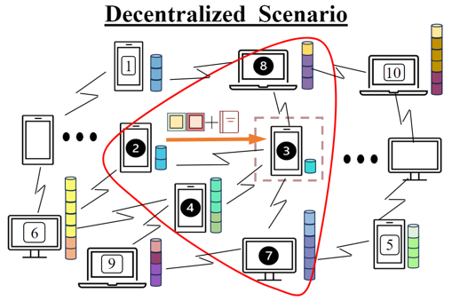

Data
Digital twin platforms that generate high-quality AI training data for industry applications.
Explore Data
Digital twin platforms that generate high-quality AI training data for industry applications.
Explore Data
Decentralised systems for training AI models on large volumes of distributed, unlabelled data.
Explore Training
Multi-tenant inference systems and efficient parallel processing for running AI models on edge servers and mobile devices.
Explore Inference